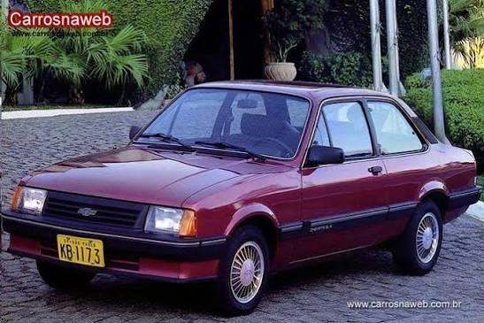
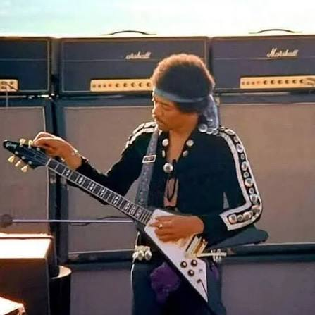

O Chevette 1989 trazia o motor 1.6/S, que entregava cerca de 78 cavalos de potência, acoplado a um câmbio manual de cinco marchas. A grande diversidade de versões (como L, SL e SL/E) agradava quem buscava desde um carro simples para o trabalho até um acabamento mais cuidadoso

A icônica guitarra Gibson Flying V de 1967 de Jimi Hendrix ficou famosa mundialmente após ser personalizada por ele com uma pintura psicodélica feita à mão, batizada de "Love Drops"
O filme conta a história de Elliott, um menino solitário que vive na Califórnia. Ele encontra um pequeno alienígena que ficou preso na Terra após sua nave ir embora. Elliott e seus irmãos escondem a criatura em casa e a apelidam de "E.T."